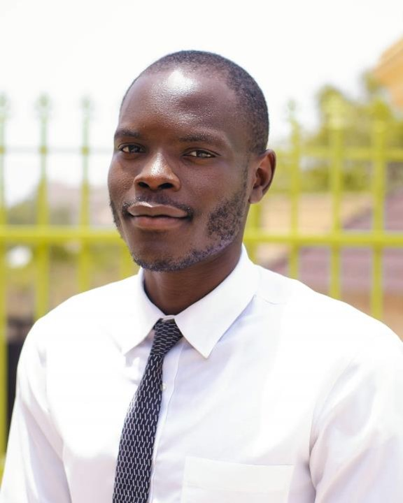

Joseph Samson Garba | WDD 130
"As a passionate student and aspiring entrepreneur, I'm currently pursuing a degree in Software Development from Brigham Young University-Idaho. My academic journey is my top priority, and I'm excited to apply my skills and knowledge in real-world scenarios. In addition to my studies, I've also had the opportunity to work on various projects as a graphic designer and video editor. I've developed educational content, video courses, and even built a brand in the healthy baked treats space with Doxa Pâtisserie. Through Doxa Pâtisserie, we aim to deliver healthier, elegant baked goods while engaging with customers. I'm driven by creativity and innovation, and I'm always looking for ways to collaborate, share ideas, and push boundaries in entrepreneurship. Feel free to connect if you're interested in educational innovation, creative design, healthy baking, or software development! Let's inspire and grow together."